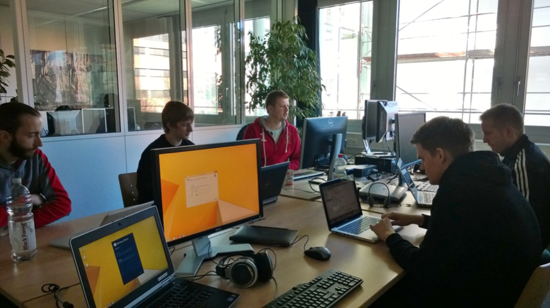

Michael Müller
- Frontend-Hacker
- Es heißt DSCHIF!
Johann Böhler
- Coder & Kritzler
- I mog Maßbier


Umfrage
Zeit zum Lernen & Ausprobieren die Woche?
- a) < 2h
- b) 2-4h
- c) 4-8h
- d) > 8h

Unsere Lernkultur
| Campus | 1/2h pro Woche |
| Bookclub | 1h pro Woche |
| Labs | 4h pro Woche |
| DevDay | 8h pro Quartal |
1/8 unserer Zeit
Innovation Week
Eine Woche in der man alle organisatorischen Freiheiten hat und eigene Ideen umsetzt.
Einschränkungen
- Präsentierbar
- Unterbrechung im „Notfall“

Wieso?
- Neue Produktimpulse
- Lernen & Expertise sammeln
- Teams durchwürfeln

Frau Schiffer von XING


Igor
Nächste Hürde: Abteilungsleiter
Jetzt fehlen nur noch die Stakeholder!
Wieso denn eine ganze Woche?
Unser Backlog ist doch voll genug!
Da kommt doch nichts Sinnvolles bei rum!

Fokus
Die Projekte
Fast fertig!

Top Tipps
(Chronologisch)
#1

Überzeugung
- Klare Ziele setzen
- Hinterfragen & Vorbereiten
#2

Relax
- Groben Zeitplan festlegen
- Räume reservieren
#3

Ideenfindung
- Socialize (z.B. Intranet)
- Pitch (… gleich mehr dazu)
- Umsetzungsziele

Elevator Pitch
"You’re alone in the elevator with the biggest of the big cheeses, and you’ve got two minutes to tell her exactly why your project matters. So what is your pitch?"
Tom Peters, The Wow Project
#4

Die Woche
- … und die Woche davor
- Abschluss finden
- Alle einladen
#5

Und die danach
- Über Erfolge berichten
- Weiterverfolgung der Ideen
Was machen andere?
"It doesn't matter if the projects are useful, the point is to try out new ideas - one will be the golden one"
"Very often the knowledge gained is worth more than the hack itself"
"Build whatever you want, with whoever you want, in whatever way you want"


Genug gelabbert
Top 3
Argumente
- Team ( … Unternehmen ) wächst zusammen
- Ansammlung von Wissen
- Chance auf Produkt-Innovation (aber nicht das Hauptziel)
Tipps
- Bewusst werden weshalb & Andere überzeugen
- Pitchen! Pitchen! Pitchen!
- Am Ende nicht aufhören
 Johann Böhler
Johann Böhler